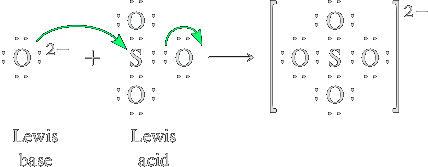
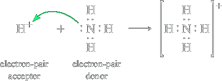
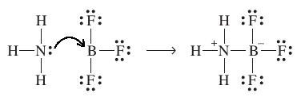
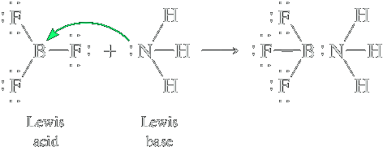
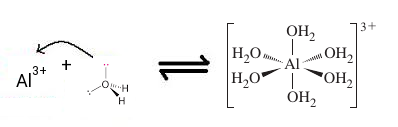

Acidi e basi di Lewis
Nel 1923, G.N. Lewis propose una teoria sul comportamento acido-base, che si estende a reazioni in fase gassosa e solida. Un acido di Lewis è una specie (atomo, molecola o ione) in grado di accettare coppie elettroniche. Una base di Lewis è una specie in grado di donare doppietti elettronici. Il prodotto di una reazione acido-base secondo Lewis è un addotto o prodotto di addizione, originatosi dalla formazione di un legame covalente tra l'acido e la base chiamato legame dativo (una sola specie fornisce il lone-pair).
B: + A → B−A
Secondo questa definizione lo ione OH− oltre ad essere una base di Brønsted–Lowry è anche una base di Lewis poichè possiede un lone-pair sull'atomo di ossigeno che può essere donato formando un legame covalente. Così come NH3.
Certain reactions have the characteristics of acid–base reactions but do not fit the Brønsted–Lowry concept. An example is the reaction of the basic oxide Na2O with the acidic oxide SO3 to give the salt Na2SO4.
Na2O(s) + SO3(g) ⟶ Na2SO4(s)
It involves the reaction of the oxide ion, O2−, from the ionic solid, Na2O, with SO3
Here SO3 accepts the electron pair from the O2− ion. At the same time, an electron pair from the SO bond moves to the O atom. Thus, O2− is the Lewis base and SO3 is the Lewis acid.
L'acido cloridrico, HCl, non è un'acido di Lewis poichè non è un accettore di lone-pairs, ma in soluzione questo si dissocia in H+ e Cl− e H+ è in grado di accettare un doppietto elettronico. Specie che possiedono un guscio di valenza incompleto sono acidi di Lewis. Consider again the neutralization of NH3 by HCl in aqueous solution, mentioned earlier. It consists of the reaction of a proton from H3O
+
with NH3: Un altro esempio è la reazione tra BF3 acido di Lewis e NH3 base di Lewis
Questa teoria risulta particolarmente utile nello spiegare la formazione di diversi ioni come quello H3O+:
Le parentesi quadre indicano che la carica positiva appartiene a tutto lo ione. Lo ione H+ è un acido di Lewis mentre l'acqua una base di Lewis.
The Lewis concept embraces many reactions that we might not think of as acid–base reactions. The reaction of boron trifluoride with ammonia is an example.
In this reaction, the NH3 molecule donates the lone pair of electrons on the nitrogen atom to the boron atom of BF3. Boron trifluoride accepts the electron pair and so is a Lewis acid. Ammonia donates the electron pair and so is a Lewis base. The electron pair originally on the nitrogen atom is now shared between the nitrogen and boron atoms, forming a B–N bond.
Un'altra importante applicazione della teoria di Lewis è quello di spiegare la formazione dei complessi o composti di coordinazione. Un esempio è lo ione Al3+ in acqua si comporta da acido di Lewis, mentre l'acqua da base di Lewis. Il numero di molecole d'acqua legate all'alluminio è detto numero di coordinazione. Si forma un acquoione.
L'acquoione ha proprietà acide dato che l'interazione tra Al3+ e l'acqua è abbastanza forte da indebolire sino a rompere uno dei legami tra l'ossigeno ed un idrogeno dell'acqua, con formazione di H3O+.
[Al(H2O)6]3+ + H2O ⇌ [Al(OH)(H2O)5]2+ + H3O+